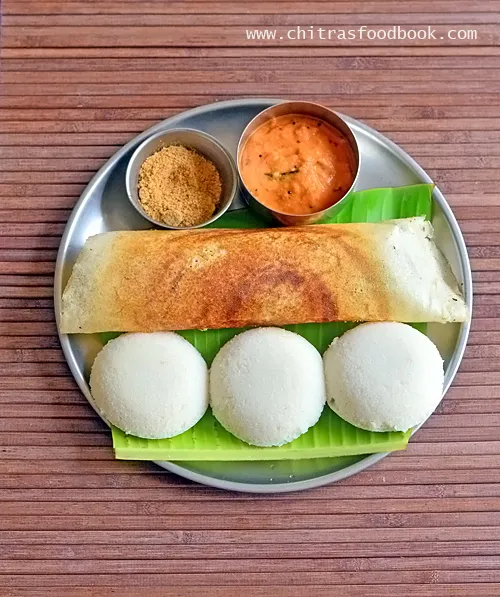

Traditional food is a type of cuisine that has been passed down through generations and is often associated with a particular culture or region. It is typically made using traditional cooking methods and ingredients that are native to the area. Traditional food can vary greatly from one culture to another, but it often reflects the history, geography, and climate of the region.
Some examples of traditional food include:
I always love eating Indian and Sri Lankan traditional food!
